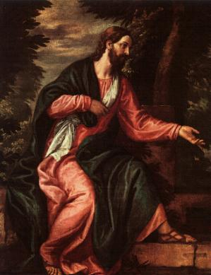
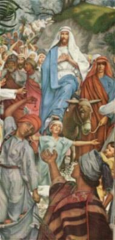
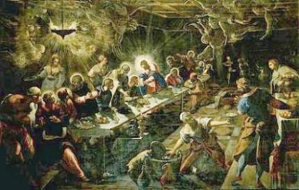
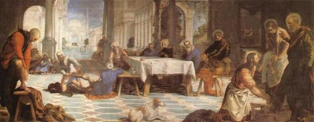
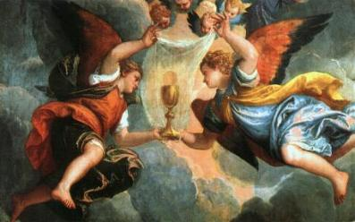
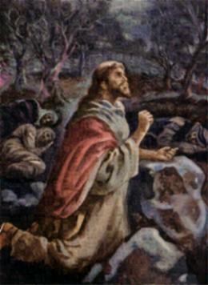

- Aqueles que mancomunavam contra a vida de JESUS, sabiam
que
- Aqueles que mancomunavam contra a vida de JESUS, sabiam
que
teriam de apresentar provas contundentes e inquestionáveis,
a fim de que todos os membros do Grande Conselho concordassem com o
julgamento e o povo não se revoltasse com a prisão DELE.
Entretanto, como não possuíam nenhuma prova
concreta que servisse de base para a acusação contra o SENHOR, urdiram
conluios diabólicos e questionavam com habilidade:
“Que faremos? Este homem realiza muitos
sinais. Se o deixarmos assim, todos crerão NELE e os romanos virão, destruindo
o nosso lugar santo (referiam-se ao Templo judeu em Jerusalém)
e a nação”.(Jo 11,47-48)
Dessa forma, o complô começou a ser
preparado afirmando que era extremamente necessário à morte DELE, a fim de não
envolver o país em nenhum risco. Segundo diziam, “era preciso que ELE morra”, para
acabar com aqueles milagres que agitavam o povo, que queria
proclama-LO Rei. Isto porque, os romanos poderiam interpretar
que existia um movimento contra-revolucionário em prol da libertação do país
e em consequência, deixaria a nação a mercê das legiões de César, que poderia
destruir totalmente todos os prédios em represália. Todavia, como
alguns membros do Conselho ainda estavam indecisos, Caifás, que era o Sumo-sacerdote
naquele ano, levantou-se e disse:
“Vós de nada entendeis. Não
compreendeis que é de vosso interesse que um só homem morra pelo povo e não
pereça a nação toda?”(Jo 11,49-50)
Com uma palavra sagaz e perigosa, Caifás tentou
confundir o raciocínio dos membros do Sinédrio que ainda estavam em dúvida,
tecendo maldosamente um argumento falso, como se Roma estivesse preocupada com a
pregação de JESUS no meio do povo.
A partir desse dia, resolveram mata-LO. Aqueles
homens combinados no mesmo projeto macabro, já não suportavam vêr aquele
“Galileu”, que entrava
nas Sinagogas e no Templo em Jerusalém, dava aulas de moral ao povo e pregava uma
Boa Nova com sabedoria e autenticidade, como nunca eles tinham visto antes. E por isso,
entre abismados e surpreendidos, sentiam-se antes de tudo, sobrepujados em eficiência
e autoridade. Assim, ficaram decididos a eliminar JESUS e permaneceram na
expectativa de encontrar o melhor momento, para colocar o projeto em execução.
Como providência imediata, prepararam dois “acusadores”, que iriam mentir no Tribunal
a fim de apontarem “culpa” no procedimento e nas palavras do SENHOR.

- Em vista da decisão dos fariseus e Sumos-sacerdotes, de quererem
prender e matar JESUS, ELE não desejando antecipar a “Hora” de seu sacrifício, evitou mostrar-se em público,
considerando que estava próxima as Solenidades da Páscoa Judaica. Retirou-se para
Efrém e depois passou alguns dias em Betânia, com Lázaro e suas irmãs. Maria, sua
Mãe, em companhia dos parentes, seguiu para Jerusalém.
Passados alguns dias, JESUS subiu de Betânia
para Jerusalém montado num jumento e acompanhado pelos Discípulos.
Foi uma entrada triunfal. À medida que se aproximava, era reconhecido pelas
pessoas, que se uniam à multidão que O seguia acenando ramos de oliveira
e cantando com entusiasmo, louvando e bendizendo a DEUS por ter enviado
aquele profeta tão poderoso.
Entretanto, aquele modesto desfile sem qualquer
pompa, que conduzia o Rei Messiânico (o Verdadeiro Messias, provado e
testemunhado pela quantidade incontável de milagres que realizou), tinha um
significado simples e concreto, pois revelava o caráter humilde e pacífico de
seu reinado.
Ao entardecer voltou para Betânia.
Judas Iscariotes, um dos Doze Discípulos,
sabendo da intenção do Sumo Sacerdote Caifás de prender JESUS, viu naquele
fato uma oportunidade para aumentar as suas economias. Ele tomava conta
da bolsa de dinheiro do grupo e sempre roubava os seus companheiros.
Com um raciocínio mesquinho, idealizou entregar JESUS aos judeus para receber
em troca uma bolsa com trinta moedas de prata, que era o preço fixado pela lei
pela vida de um escravo. Não se preocupava com o que poderia acontecer ao
SENHOR, pensava no dinheiro que ia ganhar e também, no seu mesquinho e
distorcido pensamento procurava acreditar que no momento certo ELE daria
um jeito e conseguiria escapar da tentativa de prisão, como aliás já havia
acontecido em outras ocasiões, quando quiseram prende-LO. Na Sagrada
Escritura, as citações a seguir: (Lc 4,29-30)(Jo 8,59)(Jo 10,31-39) mostram
que de outras vezes, JESUS não permitiu que O prendesse e Se safou sem
qualquer dificuldade. E pensando assim, Judas colocou o seu plano em
ação indo ao encontro do Sumo Sacerdote.
Acertada a transação, Judas Iscariotes saiu,
e os sacerdotes e fariseus rejubilaram-se com o acontecimento, porque era exatamente
o que mais desejavam.
No dia seguinte os Apóstolos agilizaram
providências para preparar a Ceia da Páscoa, conforme a determinação de JESUS.
De acordo com o preceito judaico, na tarde do
primeiro dia dos festejos da Páscoa, cada família reunia seus membros e juntos
faziam a Ceia Pascal. É uma celebração em honra e agradecimento ao CRIADOR
que libertou o povo judeu que estava escravo no Egito. (Ex 12,1-51)
Páscoa significa “passagem”, da escravidão para a liberdade.
Então, JESUS mandou Pedro e João Evangelista que
fossem a Jerusalém preparar a Ceia Pascal.
Numa Sala no andar superior de uma casa indicada por
ELE, historicamente conhecida com o nome de Cenáculo, foi onde fizeram a Última
Ceia.

O SENHOR mandou que todos se assentassem.
Tirou a túnica, cingiu-se com uma toalha, colocou água numa bacia e num gesto de
extrema humildade, ajoelhou-se e lavou os pés de cada Discípulo, a moda de um escravo,
enxugando a seguir com a toalha. Os Discípulos ficaram espantados e Pedro
inclusive reagiu, não querendo que ELE lavasse os seus pés. Entretanto em face
da decisão firme do SENHOR, todos obedeceram. (Jo 13,1-15) Depois ELE disse:
“Compreendeis o que vos fiz? Vós ME
chamais de Mestre e de SENHOR e dizeis bem, pois EU o sou. Se, portanto, EU, o
Mestre e o SENHOR vos lavei os pés, também deveis lavar-vos os pés uns aos
outros. Dei-vos o exemplo para que, como EU vos fiz, também vós o façais”.(Jo 13,12-15)

Com aquela cerimônia, JESUS quis
gravar no coração de seus Discípulos o exercício da humildade e da simplicidade,
assim como sacudir a vaidade e o orgulho da humanidade de todas gerações,
ensinando que as pessoas devem se preocupar em servir e não em serem servidas,
cultivando uma postura de disponibilidade e modéstia ao longo da vida. Não
importa a posição social e a grandeza das posses, assim como a preciosidade
dos dons pessoais. O grande deve servir ao pequeno com caridade e atenção,
da mesma forma que as pessoas bem sucedidas devem procurar ajudar aos
menos favorecidos, com simplicidade e amor.
Durante a Ceia o SENHOR revelou:
“Em verdade, em verdade,
vos digo: um de vós ME entregará”. (Jo 13,21)
O espanto foi geral. Todos se
entreolharam mutuamente... Pedro fez um sinal a João que estava ao lado de
JESUS, para saber quem era. ELE nada disse.
Passado algum tempo, Judas Iscariotes fez menção de
levantar para sair. O SENHOR observou e disse:
“Faze depressa o que tens a
fazer”.(Jo 13,27)
O demônio já havia entrado no corpo
de Iscariotes e ele saiu para trair JESUS. Como ele tomava conta do dinheiro do
grupo, os outros Discípulos ao ouvirem a palavra do SENHOR, imaginaram que
fosse uma ordem. Judas estava sendo enviado para ajudar aos pobres ou alguém
necessitado...

- Na continuidade da Ceia, todos como bons judeus seguiram
normalmente o rito do “Seder” (cerimônia da Páscoa no lar). Mas no momento certo, JESUS instituiu
o Sacramento da Eucaristia. Levantou-se e com os mesmos modos solenes do ritual
judaico, tomou o “matzá”(pão ázimo, pão sem fermento), pronunciou a benção de ação de graças,
partiu-o e distribuiu a todos, dizendo:
“Tomai e comei, isto é o Meu Corpo”.(Mt 26,26) A seguir,
pegando o Cálice com vinho, fez o “berakah”
(oração de ação de graças) e levantando-o, disse-lhes: “Bebei dele todos, pois isto é o Meu Sangue, o Sangue
da Aliança (Nova), que
é derramado por muitos (gerações) para remissão dos pecados”.(Mt 26, 27) E todos
beberam do Cálice com o Sangue do SENHOR, concluindo assim, o rito sacramental
do novo culto.


- “Dar graças” é tradução do verbo grego
“eucharistô”, cujo derivado “eucharistia”, significa ação de graças, e foi
adaptado para o português “Eucaristia”
, que é o nome que nós cristãos designamos a Santa Missa,
o Santíssimo Sacramento e a Sagrada Comunhão.
JESUS disse: “Sangue da Nova Aliança”, porque
como outrora no Monte Sinai o sangue das vítimas selou a Aliança de JAVE
(DEUS) com o povo judeu, agora, sobre a Cruz, o Sangue da Vítima Perfeita,
JESUS, ia selar a “Nova Aliança”
, entre DEUS e a humanidade de todas as
gerações.
A PÁSCOA CRISTÃ
- Na Semana Santa a Igreja Celebra a Paixão do SENHOR, recordando a abominável prisão,
a flagelação, os cruéis sofrimentos de JESUS, sua terrível Morte na Cruz e a Gloriosa
Ressurreição. É a comemoração da vitória do SENHOR sobre a Morte e por conseguinte,
sobre o Pecado e sobre todas as forças do "Mal"
, porque a Morte é uma consequência do Pecado. Assim sendo,
a Ressurreição de JESUS é o fundamento do cristianismo, porque prova que sua Obra é
verdadeira, é Divina. As graças que dela emanam, beneficiam a humanidade de todas as
gerações, neutralizando a ação do pecado e gerando a vida.
Para os judeus a Páscoa recorda a "passagem"
da escravidão para a liberdade, ou seja, através de Moisés,
o CRIADOR libertou o povo judeu que vivia cativo no Egito, trazendo-o de volta a
terra natal. Então a Páscoa Judaica comemora esta "passagem", da escravidão para a liberdade.
A Páscoa Cristã está fundamentada na Obra Imortal de JESUS, que reconciliou a
humanidade com o CRIADOR, ensejando a ressurreição das criaturas, de uma vida
no pecado, repleta de erros, de faltas e transgressões, ou seja, da "passagem" de uma existência
distante de DEUS, para uma "Nova Vida"
na graça Divina, com o cultivo do direito, da justiça
e do amor fraterno, desfrutando da felicidade de
existir em comunhão de amor com o CRIADOR.
- Terminada a Ceia, o SENHOR pronunciou um lindo sermão. Eram palavras de ensinamento,
estimulo e coragem aos Discípulos, lembrando-lhes a missão que iam realizar. Ensinou-lhes
também um preceito inesquecível: “Amai-vos
uns aos outros como EU vos amei”.(Jo 15,12) Era o Mandamento
mais completo que propicia unir os povos de todas as nacionalidades e de diferentes
crenças. Naquele momento de despedida, eram palavras perpassadas de um profundo amor,
de efetiva amizade e paternal carinho pelos Discípulos e por toda humanidade. O SENHOR
sabia que o “seu momento”
estava próximo, por isso com paciência, 
quis preveni-los mais uma vez, das ocorrências que
iam acontecer. Antecipou também que um galo cantaria após Pedro negá-LO por três vezes.
Pedro ficou triste e não quis aceitar aquela palavra do Mestre. JESUS apenas olhou
para ele com olhar de amor e piedade.(Jo 17,1-26).
Depois cantaram os Salmos de Hallel (Sl 113-118) e
foram para o outro lado da corrente do Cedron, no Jardim do Getsêmani, onde ELE
gostava de permanecer.
Seu rosto assumiu uma expressão de imensa
amargura, refletindo a tristeza que envolvia o seu Coração, ao mesmo tempo em
que uma terrível angústia apoderou-se DELE, em tal intensidade, que dos poros
dilatados pela dor cruel, brotaram gotas de sangue. ELE sentia em plenitude a
maldade da humanidade, o desamor, a ambição desenfreada, acompanhada de uma
sensualidade vulgar e animalesca, da falta de fidelidade e perseverança no
cultivo da lei e da justiça. JESUS via em sua mente o pecado do mundo, as
transgressões, as injustiças e o abandono das gerações. Seu olhar triste,
cheio de pesar não aceitava a vitória do mal e heroicamente, perante o
CRIADOR, assumiu os pecados da humanidade, daquela que já havia
morrido, daquela geração em que ELE vivia e das gerações futura, num gesto
de profunda obediência ao PAI ETERNO e de incomensurável amor a humanidade.
E assim, ao assumir todos os pecados das gerações, o SENHOR esboçou em
cores vivas a grandeza de sua Divina Missão, de Consolar DEUS
por causa de nossas transgressões, Redimir e Salvar cada um de nós pelo seu
Divino e Sagrado Sangue derramado na Cruz e propiciar-nos os meios para
vivermos com dignidade e santidade, a fim de que fôssemos felizes na Terra
e um dia, alcançassemos a eternidade no Paraiso Divino.
E naquele recanto ermo permaneceu em
orações, numa comunicação Filial e Amorosa com o CRIADOR, enquanto
os Discípulos recostados nas pedras, descansavam e dormiam.
 Próxima Página
Próxima Página
Página Anterior
Retorna ao Índice